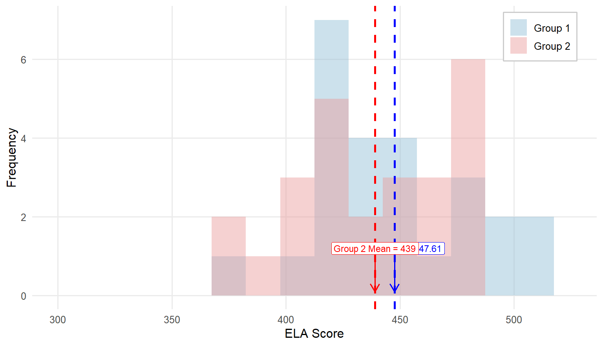
9 Chapter 9
Analyzing Differences Between Two Groups
Learning Objectives
By the end of this chapter, you will be able to:
Identify and differentiate between different types of tests to compare two groups, understanding their appropriate applications based on the nature of the data and comparisons being made.
Understand differences between parametric and nonparametric tests.
Explain the logic behind conducting independent - and related-samples t tests on continuous variables, including verifying assumptions, calculating the test statistic, and interpreting results within the context of hypothesis testing.
Apply the Mann-Whitney \(U\) test and Wilcoxon’s Matched-Pairs Signed-Ranks Test, demonstrating an understanding of their logic, appropriate use cases, and result interpretation.
Evaluate the practical significance of statistical results using measures such as Cohen’s \(d\) and eta-squared, providing context for the findings of t test analyses.
In the previous chapter, we explored the one-sample \(t\) test, a method used to compare a single group’s mean to a known population mean. This gave us the foundation for understanding how \(t\) tests work and their role in hypothesis testing. Now, we are moving on to explore additional types of \(t\) tests to compare two groups. Before diving into the details of the independent-samples \(t\) test, which is commonly used in educational research, let’s take a brief look at three types of \(t\) tests. These include the one-sample \(t\) test (covered in chapter 8), two independent-samples \(t\) test, and two related-samples \(t\) test, each tailored to different types of comparisons. Understanding the distinctions between these tests will help clarify when and how to use them effectively.
9.1 Types of \(t\) Tests
All three types of t tests involve comparing the values of a variable from one group of individuals to something else – and that something else tells you what kind of t test you should use. To explain the three tests, imagine that you have a class of third grade students, and you have a list of each student’s reading achievement scores. The following table explains how you might analyze those scores with each type of t test, depending on what you’re comparing them to.
| What to Compare | T-Test Used | Example |
|---|---|---|
| One single number | One-sample t test | You want to see if this group’s scores are, on average, significantly different from the state average for reading achievement scores. |
| A different group’s scores on the same variable | Two-independent-samples t test | You want to compare this group’s reading achievement scores to those from another third-grade class. |
| The same group’s scores on a different variable or at a different time |
Two related-samples t test | You want to compare this group’s reading scores to their math achievement scores, to see if their achievement levels are different across the two subjects. OR You want to compare this group’s reading scores after third grade to the same group’s reading scores after fourth grade, to see if they change over time. |
Now, we will provide a very brief overview of each type.
9.1.1 One-sample t test
This should be very familiar since we just learned it in the last chapter. You use this t test if you know the population mean (\(\mu\)), but you do not know the population standard deviation (\(\sigma\)). You are trying to find out if your sample mean (\(\bar{X}\)) is significantly different from a known population mean. To run this analysis, we will use only one continuous variable or column of data – each individual in the group has one value or score for the variable of interest.
9.1.2 Two-independent-samples t test
Commonly in practice, you do not know a population mean to use as a comparison point. You are instead comparing sets of numbers obtained from two separate groups in order to draw inferences about their populations. Maybe you have two groups of students, one of which received some kind of intervention, and you want to compare end-of-year achievement scores between them. You might want to know if female college students have higher GPAs than male students. This time, your dataset will need two columns to run the test: one to indicate which group the individual is in, and one with their value for the dependent variable.
9.2 Overview of the Two-Independent-Samples t Test
As we did when learning about the one-sample t test, let’s again walk through an example from educational research. Similar to the previous example, the teacher is now concerned if her class average of English Language Arts (ELA) scores (\(\bar{X} = 425.26, SD = 44.99\)) is significantly different from another class of third graders whose teacher joined the pilot implementation of a new reading intervention. When the result was returned the class average of the fellow teacher was 440 with a SD of 35. Are these two averages significantly different? Let’s find out.
Similar to the previous one-sample t test example, we will complete four steps of hypothesis testing.
Step 1: Determine the null and alternative hypotheses.
With a one-sample test, the null hypothesis states there is no difference between the sample mean and the population mean. We are now comparing the means of two independent samples, to determine statistically if their population means are identical or different. So, the null hypothesis about population means is that there is no difference between the population means of the two groups. The way we indicate is that one population mean (\(\mu_1\) for Group 1) minus the other (\(\mu_2\) for Group 2) is zero.
\[ H_0: \mu_1− \mu_2=0 \]
Therefore, the alternative hypothesis is that there is a difference between the two groups:
\[ H_A: \mu_1− \mu_2\ne 0 \]
Note that this is the alternative hypothesis for a two-sided or two-tailed test. We are not assuming that one mean is larger than the other, just that they are different. If you had reason to believe that one group mean would be larger than the other, your alternative hypothesis would be:
\[ H_A: \mu_1 > \mu_2 \]
or
\[ H_A: \mu_1 < \mu_2 \]
Step 2: Set the criteria for a decision.
The next step in testing the null hypothesis is to set the criteria for a decision: how much of a difference is significant enough that we can conclude it is not only due to random chance? We decide that \(\alpha = 0.05\) as usual, but the degrees of freedom are slightly different for an independent-samples t test compared to a one-sample t test. This time, we must subtract one from each group, so \(df = (n_1 − 1)+(n_2 − 1) = n_1 + n_2−2 = N - 2\), where \(n_1\) and \(n_2\) refer to the sample size of Group 1 and Group 2, respectively, and \(N\) refers to the total number of subjects in both groups combined.
Flip to the Critical Values of \(t\) Distribution Table at the back of the book like before, looking for the intersection between your alpha level and your degrees of freedom to find the critical value. For our example, both groups have a sample size of \(35\) so the \(df = 70 - 2 = 68\). Since we don’t have \(df = 68\), round down to \(50\) df to be conservative. The critical \(t\) value associated with 50 df at \(\alpha = 0.05\) for a two-tailed test is \(\pm2.009\).
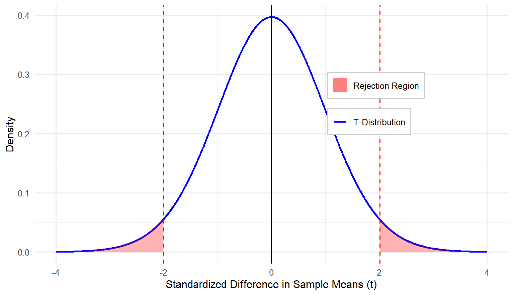
Step 3: Check assumptions and compute the test statistic.
The third step has a few parts. First, we verify that our data meet the assumptions required for this method of analysis, and then we calculate the test statistic. The assumptions for an independent-samples t test are:
Normality: The dependent variable is approximately normally distributed (as before, this requirement is less important if n > 30).
Random sampling: You are using a random sample of independent observations.
Independence: The scores are independent of one another.
Equal variances: The variances of the dependent variable are equal across two groups or populations being compared.
Equal variance is new, but it is important to keep in mind for this method. Remember earlier in the book when we said means are important and so is standard deviation (or variance, which is the same basic concept)? Here is one place where that comes into play. Imagine you are comparing scores of two groups on the same test. In one group, all scores are tightly clustered near the mean. In the other group, they are completely spread out with a much wider range than compared to the first group. It is harder to make a solid conclusion about the differences between two group means when the distributions are completely different.
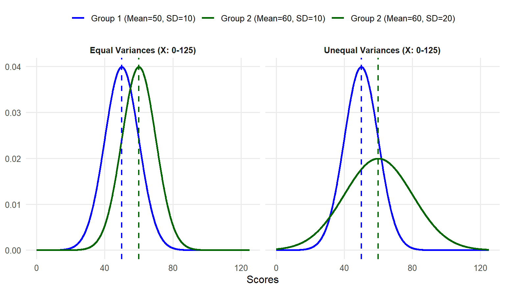
When analyzing data from two groups, it is essential to compute and evaluate the size of variance for each group. This helps in understanding the spread of the data and determining if the variances are similar or different. Drawing histograms for each group is particularly useful for visually inspecting the data spread and identifying any noticeable differences between two distributions.
Levene’s Test for Assessing Equal Variances
Levene’s Test is a statistical procedure used to assess whether the variances of a dependent variable are equal across different groups. This test is typically performed before conducting analyses that assume equal variances, such as t tests or ANOVA, to determine if this assumption holds. We won’t show you how to calculate Levene’s Test by hand because statistical software packages will do this for you.
However, the important thing to remember is that if the result of Levene’s Test is statistically significant \((p < .05)\), your variances are not equal. If your variances are not equal, you should consider using a different test that we will learn later or, at minimum, report the statistical results adjusted for unequal variances between two groups, which is provided by most software packages as well. If your Levene’s Test results are not statistically significant \((p > .05)\), your group variances are considered equal.
Step 4a: Find the p value.
Next, we calculate the test statistic. We are going to show you the formula first, but please don’t panic. It is not as bad as it seems.
\[ t = \frac{(\bar{X}_1-\bar{X}_2)-(\mu_1-\mu_2)}{\sqrt{s_p^2(\frac{1}{n_1}+\frac{1}{n_2})}} \]
Let’s take that a little at a time, starting with the numerator. The first part is the difference between group means in your sample. Then we are comparing that to the expected difference between group means in the population (i.e., the mean differences specified in the null hypothesis). Look back at the null hypothesis for this type of test. What is the expected difference between group means in the population? Zero! For practical purposes, the top half of the fraction is just the difference between group means.
Do you remember what was in the denominator of the t statistic for a one-sample t test? It was the standard error, or the sample standard deviation divided by the square root of the sample size. This denominator is more complicated because we have two separate groups. Under the null hypothesis, we assume that both sample groups came from the same population, but most likely the standard errors are not exactly the same. So which sample variance do we use as an estimate for the population variance? The optimal solution is to make full use of the variance estimates from both samples to obtain a more accurate estimate of the population variance.
There is another new value in the denominator, \(s_p^2\) ,
which represents the pooled sample variance. The formula for this looks very complicated, but it is just a way of weighting the two sample variances by the sample size. If one group is bigger than the other, their sample variance is weighted more heavily by this formula. If you notice this looks a little different from what you might find elsewhere, that is because we are being more specific about how you get to the degrees of freedom, with n – 1.
\[ s_p^2 = \frac{(n_1 − 1)s_1^2 + (n_2 − 1)s_2^2}{(n_1+ n_2)−2} \]
What does all that mean? You are multiplying the sample variance for group one by the degrees of freedom for group one and adding that to the same thing for group two. Then you are dividing the outcome by the degrees of freedom for the whole test. In our example, the sample size of each group is 35. Thus,
\[ s_p^2 = \frac{(34)s_1^2 + (34)s_2^2}{68} \]
Now you have a measure of sample variance that you can use for the whole combined sample of both groups. If both groups have the same sample size, like our example, there is a much simpler version of the formula you can use.
\[ s_p^2 = \frac{s_1^2 + s_2^2}{2} \]
In our example, \(s_1^2 = (44.99)^2\), and \(s_2^2 = (35)^2\). Let’s plug in these values and compute the \(s_p^2\)
\[ s_p^2 = \frac{s_1^2 + s_2^2}{2} = \frac{(44.99)^2 + (35)^2}{2} = 1624.55 \]
Either way, once you have the value for \(s_p^2\), you bring that back to the \(t\) statistic formula and do what we always do: standard deviation divided by the square root of the sample size. It just looks more complicated when we have two separate sample sizes, and because this formula starts with sample variance and then takes the square root, rather than starting with standard deviation, which is already the square root of the variance.
\[ t = \frac{(\bar{X}_1-\bar{X}_2)-(\mu_1-\mu_2)}{\sqrt{s_p^2(\frac{1}{n_1}+\frac{1}{n_2})}} = \frac{(425.26−440)−0}{\sqrt{1624.55(\frac{1}{35}+\frac{1}{35})}} = \frac{-14.74}{9.634} = -1.53 \]
If you are completely lost, try not to get too caught up in the math and focus on the concept. We are finding the difference between the two group means and dividing it by the standard error for the difference. It is just more complicated to calculate this version of standard error than it has been for other tests. The good news is that statistical software programs will do the math for you.
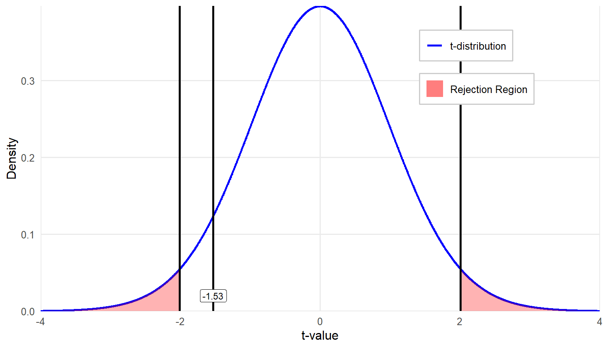
The last step in testing a hypothesis is more straightforward: compare the value of the \(t\) statistic you just calculated to the critical value you identified in step-two. If the \(t\) statistic is larger, meaning farther out from the center of the distribution in either direction, then a significant difference exists between the groups.
In this example, the observed \(t\) value is \(= -1.53\) which is greater than the lower critical \(t\) value of \(-2.009\). Therefore, we fail to reject the null hypothesis. The actual \(p\) value for \(t = -1.53\) in a two-tail test is \(0.131\).
Step 4b: Draw a conclusion and report your conclusion.
Since we failed to reject the null hypothesis, which states that there is no difference in population means of the two groups, we conclude that the ELA classroom averages taught by two different teachers are not significantly different. The observed mean difference between two groups is simply by chance due to sampling. Note that we do not calculate the effect size to assess practical significance, as no statistically significant difference was found.
How might we report the result in APA style? An independent-samples t test was conducted to compare ELA classroom averages between students taught by two different teachers. The results indicated that there was no statistically significant difference in classroom averages between the two groups, \(t(68) = 1.53, p = .131\), suggesting that the mean ELA classroom scores for students in these two classrooms are comparable.
9.3 Effect Size for the Independent-Samples \(t\) Test
If you find a significant difference, you should calculate the effect size. We most commonly report effect size for this method using estimated Cohen’s d. If you remember back to chapter 8, Cohen’s d quantifies the magnitude of the difference between two means relative to the variability in the data. Similarly, we can use Cohen’s d as a standardized measure of practical significance, helping to interpret the importance of the result. However, the formula for Cohen’s d that you use for an independent-sample t test is slightly different from what we have already learned:
\[ d=\frac{M_1-M_2}{\sqrt{s_p^2}} \]
The numerator is just the difference in sample means, and the denominator is the pooled sample standard deviation; you can find the formula earlier in the chapter.
Eta-squared (\(\eta^2\)) is another measure of effect size used to quantify the proportion of variance in a dependent variable that is associated with one or more independent variables in an analysis. It provides an estimate of how much of the variability in the dependent variable is explained by the grouping variable. Eta-squared can be calculated using the following formula:
\[ \eta^2=\frac{t^2}{t^2+df} \]
Where:
\(t^2\) is the square of the t test statistic.
\(df\) is the degrees of freedom for the test.
Either way, you only report effect size if you find a significant result when conducting your hypothesis test.
9.6 Comparing Two Groups with Ordinal Data: Nonparametric Tests
In hypothesis testing, parametric and nonparametric tests differ primarily in their assumptions about the data. In general, parametric tests, such as t tests, are distinguished by the assumption of normality on the data with a continuous dependent variable. Parametric tests typically use the raw data directly in their calculations and require certain conditions, such as homogeneity of variance and interval or ratio-level measurement of the dependent variable.
In contrast, nonparametric tests are distinguished by the absence of any distributional requirement for the data and are less restrictive in terms of the scales of measurement. These tests are more flexible and can be used with ordinal data or when assumptions for parametric tests are violated. Instead of analyzing raw values, nonparametric methods often involve rank-based transformations of the data before analysis, making them less sensitive to outliers and skewed distributions.
A difference between the two approaches is that parametric tests allow for inferences about population parameters, such as means and standard deviations. However, nonparametric tests do not estimate specific population parameters; they instead assess whether two or more groups share the same distribution. The primary advantage of nonparametric tests is their robustness and fewer assumptions, making them useful alternatives to \(t\) tests when data are not normally distributed, have small sample sizes, or contain outliers.
9.7 Choosing between Parametric and Nonparametric Tests
In general, we prefer to use the test that is the most efficient compared to others and produces the largest statistical power among all alternatives. For example, consider the two independent samples t test. If the scores are independent and homoscedastic, and follow a normal distribution, this test is optimal in that there is no other test with greater statistical power for a given alternative. On the other hand, failure to satisfy the normality assumption means that the t test may not be optimal. In particular, the power of nonparametric competitors often exceeds that of the t test when the population distribution is symmetric but is flatter (or heavy-tailed), when the distribution is highly skewed, or if the distribution is multimodal and heavy-tailed.
If data assumptions of parametric tests are not adequately satisfied, the actual α of a test (i.e., the probability of having a Type I error) may differ substantially from the user-specified α level (e.g., 0.05), although we never know exactly how much the probability differs. Especially when sample size exceeds 30, there is evidence that many parametric tests, especially those comparing means, maintain control over Type I error rates even when the dependent variable is not normally distributed. If the distribution is skewed and/or multimodal and heavy-tailed, nonparametric tests frequently do a better job of controlling for Type I error rates.
In educational research, nonparametric tests are particularly useful when the outcome variable includes responses on a Likert-type rating scale, because the distribution is often skewed. You may come across research that uses parametric tests, such as a two-independent samples t test, to compare responses on a single Likert scale item between two groups. However, this practice is not generally recommended. Additionally, as we have discussed, outliers can contribute a great deal of error variance in parametric tests, so a nonparametric alternative potentially is more powerful.
The following table shows parametric tests you are already familiar with and nonparametric alternatives. We will describe the Mann-Whitney U test and the Wilcoxon signed rank T test in more detail.
| Parametric | Nonparametric |
|---|---|
| One-sample t test | Sign test |
| Independent-samples t test | Mann–Whitney U test |
| Related-samples t test | Wilcoxon signed rank T test |
| One-way between-subjects ANOVA | Kruskal–Wallis H test |
| One-way repeated measures ANOVA | Friedman test |
9.8 Two Independent-Sample Mann-Whitney \(U\) Test
The Mann-Whitney \(U\) test is a statistical procedure used to determine whether the dispersion of ranks is equal across two independent groups. It is used as a nonparametric alternative to the two independent-samples t test. The test has three assumptions:
Both samples are randomly drawn from their respective populations.
In addition to independence within each sample, there is mutual independence between the two samples (no one belongs to both groups).
The measurement scale is at least ordinal (no categorical variables).
Let’s walk through an example. Suppose that we give nine children a math achievement test and record their scores. They then receive daily practice on arithmetic problems. At the end of each practice session, their papers are marked by a teacher’s aide, who praises them for the number they got right and states that they might do even better in the next few days. We treat eight other children the same except for the statements made by the teacher’s aide. For these children, they point out the problems they missed and tell them that they should be able to do better than that. At the end of two weeks, we retest all children on a parallel form of the math achievement test and calculate their “gain scores” over the two-week period:
| Criticism (X) | -3 | -2 | 0 | 0 | 2 | 5 | 7 | 9 | |
|---|---|---|---|---|---|---|---|---|---|
| Praise (Y) | 0 | 2 | 3 | 4 | 10 | 12 | 14 | 19 | 21 |
\[ H_0 \text{: The two groups have identical distributions.} \] \[ H_A: \text{The two groups do not have identical distributions.} \]
These data are measured on a continuous scale, so theoretically we could use a two independent-samples t test, but first we should look at the descriptive statistics to see if our data meet the assumptions of that method. You can look at descriptive statistics for each group, but we think the most helpful way to consider the data is by viewing histograms for each group:
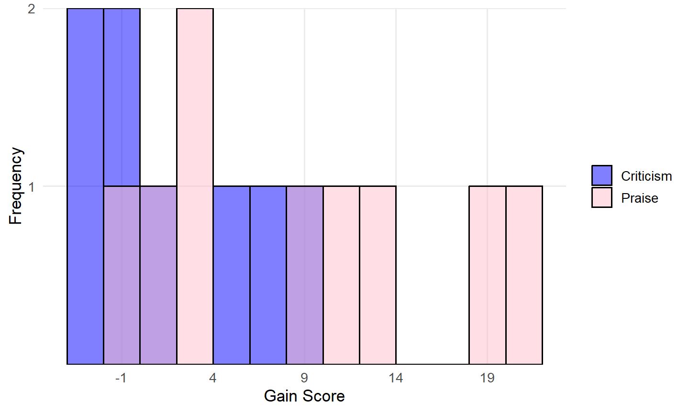
Given the very small sample sizes (8 and 9 cases for Criticism and Praise, respectively) and two distributions not looking normal, we should not use the independent-samples \(t\) test. Since this is a very small dataset, let’s calculate the test statistic by hand to illustrate the logic behind the test. In practice, statistical software can perform this analysis.
Step 1: Label the two groups \(X\) and \(Y\). The smaller group should be labeled \(X\); if sample sizes are equal then it doesn’t matter which group is labeled \(X\).
\(X\) = Criticism condition
\(Y\) = Praise condition
Step 2: Combine all the scores into one distribution of \(n_X\) + \(n_Y\) cases. Arrange them in order of the dependent variable from lowest to highest and assign ranks.
| Condition | Gain Scores | Assigned Rank |
|---|---|---|
| X | -3 | 1 |
| X | -2 | 2 |
| X | 0 | 4 |
| X | 0 | 4 |
| Y | 0 | 4 |
| X | 2 | 6.5 |
| Y | 2 | 6.5 |
| Y | 3 | 8 |
| Y | 4 | 9 |
| X | 5 | 10 |
| X | 7 | 11 |
| X | 9 | 12 |
| Y | 10 | 13 |
| Y | 12 | 14 |
| Y | 14 | 15 |
| Y | 19 | 16 |
| Y | 21 | 17 |
When assigning ranks in a dataset, ties occur when two or more scores are identical. In such cases, instead of giving each tied score a unique rank, we calculate the average rank they would have occupied.
For example, in the table above, three students had gain scores of 0. These scores would have been ranked 3, 4, and 5 if assigned individually. Instead, we sum these ranks (3 + 4 + 5 = 12) and divide by 3, giving each student a rank of 4. The next score is then assigned the rank that follows the tied ranks, which in this case is 6.5 (the average of the next two ranks, 6 and 7).
Step 3: Divide the cases back into their original groups.
| Criticism (X) | Assigned Rank | Praise (Y) | Assigned Rank |
|---|---|---|---|
| -3 | 1 | 0 | 4 |
| -2 | 2 | 2 | 6.5 |
| 0 | 4 | 3 | 8 |
| 0 | 4 | 4 | 9 |
| 2 | 6.5 | 10 | 13 |
| 5 | 10 | 12 | 14 |
| 7 | 11 | 14 | 15 |
| 9 | 12 | 19 | 16 |
| 21 | 17 |
Step 4: Sum up the ranks for each group.
\[ \text{Sum of ranks for Group X: } \sum R_X = 1 +2+4+4+6.5+10+11+12=50.5 \]
\[ \text{Sum of ranks for Group Y: } \sum R_Y=4+6.5+8+9+13+14+15+16+17=102.5 \]
Step 5: Use the summed ranks to calculate the test statistic (i.e., Mann-Whitney \(U\) Statistic).
\[ U_x = n_x n_y + \frac{n_x(n_x + 1)}{2} - \sum R_x = 8 \times 9 + \frac{8(9)}{2} - 50.5 = 57.5 \]
\[ U_y = n_x n_y + \frac{n_y(n_y + 1)}{2} - \sum R_y = 8 \times 9 + \frac{9(10)}{2} - 102.5 = 14.5 \]
- \(n_X\) and \(n_Y\) are the sample sizes of groups X and Y, respectively.
- \(R_X\) and \(R_Y\) are the rank sums for each group.
- U is the smaller of \(U_X\) and \(U_Y\).
Step 6: Evaluate the test statistic using the Critical Values for the Mann-Whitney \(U\) Test table in the appendix. We use the value of \(U = 14.5\) as the test statistic because it is the smaller of the two U values calculated.
Next, we determine whether we are conducting a one-tailed or two-tailed test. In this case, our test is non-directional (two-tailed), so we divide our alpha level of 0.05 equally between the two tails, resulting in 0.025 in each tail.
We locate the critical value by finding the number of cases in each group along the left side and top of the table. For group sizes of 8 and 9, the critical value is 15. Since our test statistic (\(U = 14.5\)) is less than or equal to the critical value (15), we reject the null hypothesis that the two distributions are the same.
Note that, unlike many parametric tests where we compare the test statistic to see if it exceeds the critical value, in the Mann-Whitney \(U\) test, we reject the null hypothesis when the test statistic is less than or equal to the critical value.
With this result, we conclude that the distributions of the two groups are statistically different, indicating that the scores between the Criticism and Praise groups differ significantly, \(U = 14.5\), \(p = 0.043\).
9.9 Wilcoxon’s Matched-Pairs Signed-Ranks Test
While the Mann-Whitney \(U\) Test is used to compare two independent groups, Wilcoxon’s Matched-Pairs Signed-Ranks Test is a nonparametric alternative to the related-samples (or repeated-measures) t test.
Let’s walk through another example to help you learn more about this method. Suppose we are studying the effect of a new instructional strategy on math performance, specifically on the speed and accuracy of solving arithmetic problems. We form 10 pairs of students, matched according to their pre-test score earned on similar math problems, and then randomly assign members of each pair to either the new instructional strategy or the traditional teaching method (control group). After completing a structured learning session, the students take a post-test assessing their arithmetic skills.
Their post-test scores were recorded in the table below as Traditional (control) and New Strategy (treatment). Although different students are assigned to the two groups, the pairing process creates dependence between their scores, as students were first matched by pre-test ability before assignment.
As we are interested in any difference (positive or negative) due to the instructional strategy, we use a two-tailed test. The null and alternative hypotheses for this investigation are:
\(H_0\): There is no difference in student performance between two instructional groups.
\(H_A\): There is a difference in student performance between two instructional groups.
Rather than create new tables for each of the steps required to calculate the test statistic by hand, we will add a row to the table below showing which columns belong to which step in the process.
Step 1. Recode the paired scores in two columns.
Step 2. Obtain the difference between members of each pair (X-Y).
Step 3. Disregard the sign of the difference obtained and then assign ranks to the absolute magnitude of the difference. This means that a difference of -8 would be a higher rank than a difference of 5. If any difference is zero, disregard it in subsequent calculations. For tied ranks, assign the mid rank as we did in the prior test.
Step 4. Reassign the appropriate sign to the rank. This is a weird step but don’t take it literally, e.g., -2 does not mean the rank of -2 (negative 2nd). It simply provides two types of information about the score at once: the rank of the score and the direction of the difference.
Step 5. Compute the summed rank for both positive and negative differences. The smaller absolute value summation becomes our test statistic (6.5).
| Steps | 1 | 2 | 3 | 4 | 5 |
|---|
| Pair | Traditional (X) | New (Y) | Difference (X-Y) | Absolute Difference | Rank of Absolute Difference | Signed rank of X-Y | Positive Difference | Negative Difference |
|---|---|---|---|---|---|---|---|---|
| 1 | 24 | 28 | -4 | 4 | 2 | -2 | -2 | |
| 2 | 39 | 29 | 10 | 10 | 6.5 | 6.5 | 6.5 | |
| 3 | 29 | 34 | -5 | 5 | 3.5 | -3.5 | -3.5 | |
| 4 | 28 | 21 | 7 | 7 | 5 | 5 | 5 | |
| 5 | 25 | 28 | -3 | 3 | 1 | -1 | -1 | |
| 6 | 32 | 15 | 17 | 17 | 10 | 10 | 10 | |
| 7 | 31 | 17 | 14 | 14 | 8 | 8 | 8 | |
| 8 | 33 | 28 | 5 | 5 | 3.5 | 3.5 | 3.5 | |
| 9 | 31 | 16 | 15 | 15 | 9 | 9 | 9 | |
| 10 | 22 | 12 | 10 | 10 | 6.5 | 6.5 | 6.5 | |
| SUM | 55 | 48.5 | -6.5 |
We then use the Critical Values for the Wilcoxon Matched-Pairs Signed-Ranks Test table in the appendix. Since \(n = 10\) and we are conducting a two-sided test with an alpha level of .05, the critical value is 8. Our test statistic is 6.5, and similar to the Mann-Whitney U test, we reject the null hypothesis if the test statistic is less than or equal to the critical value. In this case, since 6.5 ≤ 8, we reject the null hypothesis.
Alternatively, statistical software can be used to obtain the associated p value for the test statistic. In this case, the computed \(p\) value = 0.037, which is less than 0.05, further supporting the rejection of the null hypothesis. Therefore, we conclude that there is a statistically significant difference in scores between the two instructional strategies. This suggests that the new instructional strategy has an effect. However, it is important to note that the test itself only determines whether a difference exists; it does not indicate the direction of the effect (i.e., whether the new strategy increased or decreased scores).
Analyzing Differences Between Two Groups in R
In this section, we demonstrate how to compare two independent groups (students who are more motivated vs. not more motivated in math) on math achievement (PV1MATH) from the PISA 2022 U.S. dataset using R. We illustrate both parametric (independent-samples t test) and nonparametric (Mann-Whitney U) methods, aligning with the chapter’s discussion of assumptions and alternatives.
1 Data Exploration
data$MATHMOT <- factor(data$MATHMOT, levels = c(0, 1), labels = c("Not more motivated", "More motivated"))
table(data$MATHMOT)
Not more motivated More motivated
3885 125 # Visualize math score distribution by motivation
library(ggplot2)
library(dplyr)
ggplot(data %>% filter(!is.na(MATHMOT)), # Filter out missing values in MATHMOT
aes(x = PV1MATH, fill = as.factor(MATHMOT))) +
geom_density(alpha = 0.5) +
labs(title = "Distribution of Math Scores by Math Motivation",
x = "Math Scores (PV1MATH)", fill = "Math Motivation") 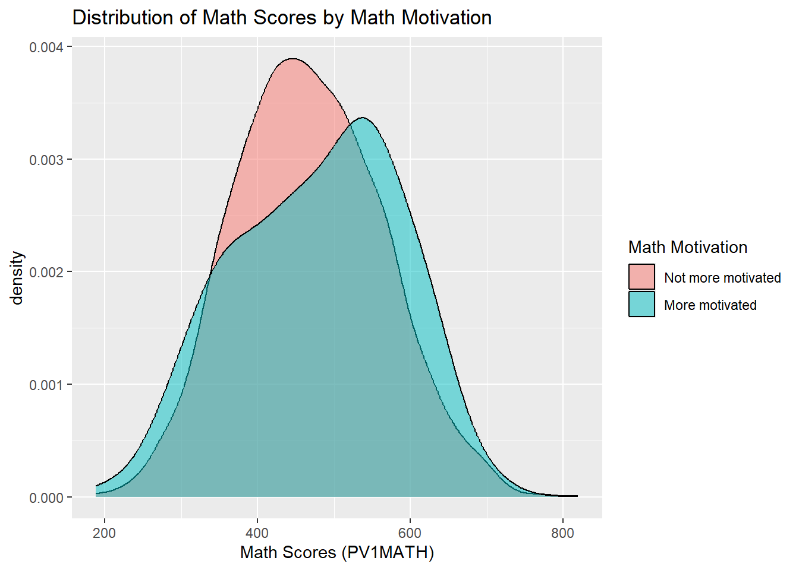
Interpretation: Among the participants, 125 students reported being more motivated in math, while 3,885 students did not. The density plot above compares the distribution of math scores between two groups of students based on their self-reported math motivation. The score distribution of more motivated students (in cyan) appears slightly shifted to the right, suggesting higher overall performance in math. This visual pattern hints at a potential performance difference related to student motivation toward math, which will be formally tested in the next steps using statistical methods.
2 Two Independent-Sample t Test
2.1 Define Hypothesis
\(H_0\): The mean math scores are equal between the two groups (\(\mu_0=\mu_1\)).
\(H_a\): The mean math scores are different between the two groups (\(\mu_0\ne \mu_1\)₁).
2.2 Conduct the Test
library(car)
# Test for equal variances
leveneTest_result <- leveneTest(PV1MATH ~ factor(MATHMOT), data = data)
leveneTest_result Levene's Test for Homogeneity of Variance (center = median)
Df F value Pr(>F)
group 1 5.3625 0.02062 *
4008
---
Signif. codes: 0 '***' 0.001 '**' 0.01 '*' 0.05 '.' 0.1 ' ' 1# Perform independent-samples t-test
t_test_result <- t.test(PV1MATH ~ MATHMOT, data = data, var.equal = FALSE)
t_test_result
Welch Two Sample t-test
data: PV1MATH by MATHMOT
t = -1.2416, df = 130.44, p-value = 0.2166
alternative hypothesis: true difference in means between group Not more motivated and group More motivated is not equal to 0
95 percent confidence interval:
-31.111221 7.118331
sample estimates:
mean in group Not more motivated mean in group More motivated
466.6617 478.6582 Interpretation:
Levene’s Test for Equality of Variances yielded a statistically significant result (\(F = 5.36, p = .021\)), indicating that the assumption of equal variances is violated. Therefore, we proceeded with Welch’s \(t\)-test (by setting var.equal = FALSE in the t.test() function), which adjusts for unequal variances.
The Welch’s \(t\)-test revealed no statistically significant difference in average math scores between students who reported being more motivated and those who did not, \(t(130.44) = -1.24\), \(p = .217\). The mean math score for students who were not more motivated was 466.66, compared to 478.66 for students who reported being more motivated. Although more motivated students scored slightly higher on average, the difference is not statistically meaningful, and could plausibly be due to random variation.
2.3 Effect Size (Cohen’s \(d\))
library(lsr) # Load the lsr package for effect size calculation
# Cohen's d for an independent-samples t-test
d_value <- cohensD(PV1MATH ~ MATHMOT, data = data)
d_value [1] 0.1254531Interpretation: The effect size (Cohen’s \(d\)) was 0.13, which is considered small by conventional benchmarks. This suggests that the difference in math scores between more motivated and less motivated students is minimal in practical terms.
3 Two Independent-Sample Mann-Whitney U Test
If the normality assumption is violated or the data are ordinal or highly skewed, the Mann-Whitney \(U\) test is appropriate. In R, this test is implemented using the wilcox.test() function. Note this is not the same as the Wilcoxon’s Matched-Pairs Signed-Ranks Test, which is used for paired or related samples.
In our case, the data do not strongly violate normality and are measured on a continuous scale, so using a \(t\)-test is justified. However, we demonstrate the Mann-Whitney \(U\) test here for educational purposes.
# Perform Mann-Whitney U test
mw_result <- wilcox.test(PV1MATH ~ MATHMOT, data = data)
mw_result
Wilcoxon rank sum test with continuity correction
data: PV1MATH by MATHMOT
W = 222444, p-value = 0.1099
alternative hypothesis: true location shift is not equal to 0Interpretation: The Mann-Whitney \(U\) test yielded \(W = 222,444\), with a \(p\)-value of 0.110. This result suggests that there is no statistically significant difference in the distribution of math scores between students who are more motivated and those who are not. In other words, based on the ranked data, math motivation does not appear to meaningfully shift the overall distribution of scores, aligning with the findings from the Welch’s t-test.
Analyzing Differences Between Two Groups in SPSS
In this section, we demonstrate how to compare two independent groups (students who are more motivated vs. not more motivated in math) on math achievement (PV1MATH) from the PISA 2022 U.S. dataset using SPSS. We illustrate both parametric (independent-samples t test) and nonparametric (Mann-Whitney \(U\)) methods, aligning with the chapter’s discussion of assumptions and alternatives.
1 Data Exploration
We first examine the grouping variable to understand how many students fall into each math motivation group. Follow these steps to check the frequency of MATHMOT, the variable indicating students’ motivation to do well in mathematics:
Click Analyze > Descriptive Statistics > Frequencies.
Move MATHMOT into the Variable(s) box.
Click OK.
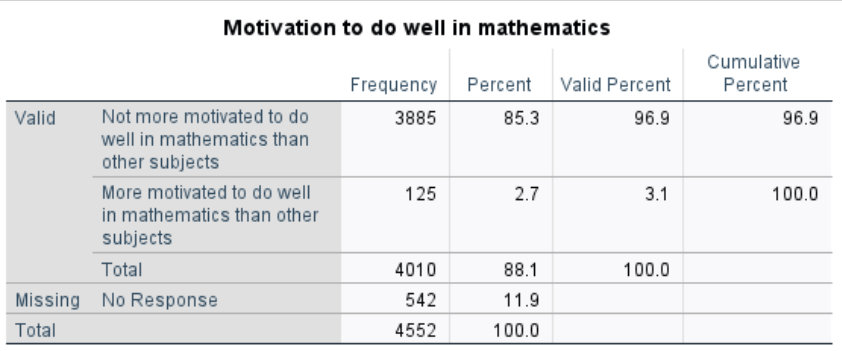
Interpretation:
The results show that, among the 4,010 participants, 125 students reported being more motivated in math, while 3,885 students did not. There are 542 cases with missing values on this variable.
Then we follow the steps below to visualize the distribution of math scores (PV1MATH) between the two groups of students based on their self-reported math motivation:
Click Graphs > Boxplot.
In the dialog box, choose Simple and select Summaries for groups of cases, then click Define.
Move PV1MATH into the Variable field (this is the math score to be plotted).
Move MATHMOT into the Category Axis field (this defines the two motivation groups).
Click OK and you will get the following plot.
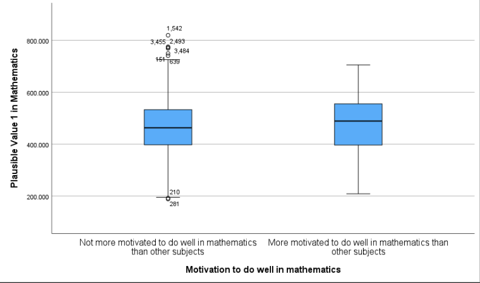
Interpretation:
The boxplot displays the distribution of math scores (PV1MATH) for students who are more motivated versus not more motivated to do well in mathematics. Visually, the more motivated group shows a slightly higher median math score, and the overall distribution appears slightly shifted upward compared to the less motivated group. Both groups exhibit a fairly wide range, and there are several outliers in the “Not more motivated” group. These visual differences suggest a possible group effect, which will be formally tested using statistical methods in the next steps.
2 Two Independent-Sample t Test
2.1 Define Hypothesis
\(H_0\): The mean math scores are equal between the two groups (\(\mu_0 = \mu_1\)).
\(H_a\): The mean math scores are different between the two groups (\(\mu_0 \ne \mu_1\)).
2.2 Conduct the Test
Before conducting the independent-samples t-test, we first verify how the grouping variable is coded. This ensures we know which value corresponds to each group, which is essential for correctly setting up and interpreting the test. To do this, go to the Variable View in SPSS and locate the variable MATHMOT. In the Values column for that row, click the cell to view the assigned labels. You will see that 0 represents “Not more motivated…”, and 1 represents “More motivated…”. This coding information will be used when defining the groups in the upcoming independent-samples t-test.
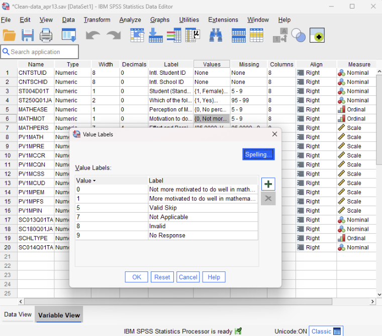
SPSS provides a convenient one-step procedure for comparing two group means. It simultaneously performs Levene’s Test for Equality of Variances and the independent-samples \(t\)-test, reporting results both under the assumption of equal variances (Student’s t-test) and without it (i.e., Welch’s t-test). This allows us to determine which result to interpret based on the outcome of Levene’s Test. SPSS can also output the effect size (e.g., Cohen’s d) as part of the same analysis. Follow these steps to conduct the analysis:
Click Analyze > Compare Means > Independent-Samples T Test.
Move PV1MATH into the Test Variable(s) field.
Move MATHMOT into the Grouping Variable field.
Click Define Groups, enter 0 for Group 1 and 1 for Group 2.
(These values correspond to students who are not more motivated and students who are more motivated, respectively. Recall that SPSS uses this information to distinguish between the two groups, with 0 representing “Not more motivated” and 1 representing “More motivated.” SPSS calculates the t-statistic as the mean of Group 1 minus the mean of Group 2, that is, the mean of the “Not more motivated” group minus the mean of the “More motivated” group. You may reverse the group coding if preferred, but be sure to adjust the interpretation accordingly to reflect the correct reference group.)
Click Options to adjust the confidence interval level (e.g., 95%).
Click Estimate effect sizes
Click Continue, then click OK to run the test.
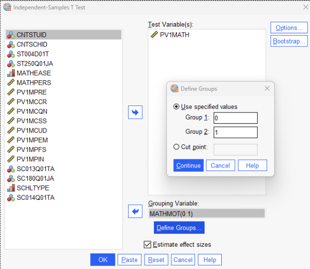
Results:
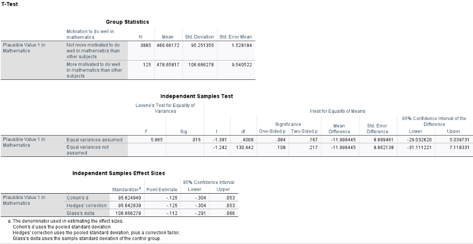
Interpretation:
Levene’s Test for Equality of Variances yielded a statistically significant result (\(F = 5.865\), \(p = .015\)), indicating that the assumption of equal variances is violated. Therefore, we proceeded with Welch’s \(t\)-test (interpreting the second line of the SPSS output labeled “Equal variances not assumed”), which adjusts for unequal variances.
The Welch’s \(t\)-test revealed no statistically significant difference in average math scores between students who reported being more motivated and those who did not, \(t(130.44) = -1.24\), \(p = .217\). The mean math score for students who were not more motivated was 466.66, compared to 478.66 for students who reported being more motivated (These two values are in the Table titled “Group Statistics”). Although more motivated students scored slightly higher on average, the difference is not statistically meaningful and could plausibly be due to random variation.
From the table labeled “Independent Samples Effect Sizes,” the effect size (Cohen’s \(d\)) was -0.125, which is considered small by conventional benchmarks. This suggests that the difference in math scores between more motivated and less motivated students is minimal in practical terms.
3 Two Independent-Sample Mann-Whitney U Test
If the normality assumption is violated or the data are ordinal or highly skewed, the Mann-Whitney \(U\) test is appropriate. Note this is not the same as the Wilcoxon’s Matched-Pairs Signed-Ranks Test, which is used for paired or related samples.
In our case, the data does not strongly violate normality and are measured on a continuous scale, so using a t-test is justified. However, we demonstrate the Mann-Whitney U test here for educational purposes. Follow these steps to conduct the analysis:
Click Analyze > Nonparametric Tests > Legacy Dialogs > 2 Independent Samples.
Move PV1MATH into the Test Variable List box.
Move MATHMOT into the Grouping Variable box.
Click Define Groups, and enter 0 and 1 to match the group coding used earlier.
(Here, 0 represents “Not more motivated” and 1 represents “More motivated.”)
Ensure that Mann-Whitney U is selected under Test Type.
Click OK to run the analysis.
Results:
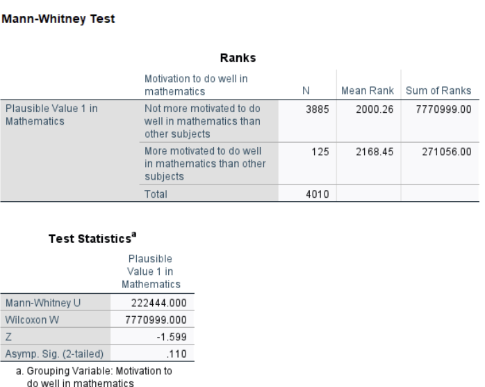
Interpretation:
The Mann-Whitney \(U\) test yielded \(W = 222,444\), with a \(p\)-value of 0.110. This result suggests that there is no statistically significant difference in the distribution of math scores between students who are more motivated and those who are not. In other words, based on the ranked data, math motivation does not appear to meaningfully shift the overall distribution of scores, aligning with the findings from the Welch’s \(t\)-test.
Conclusion
In chapter 9, we expanded our understanding of hypothesis testing by exploring various methods for comparing two groups. Central topics included the distinctions among the three types of \(t\) tests—one-sample, independent-samples, and related-samples—and the assumptions underpinning these methods, such as normality, independence, and equal variances. Additionally, the chapter emphasized the importance of effect size measures, such as Cohen’s \(d\) and eta-squared, to evaluate the practical significance of findings beyond mere statistical significance.
The chapter also introduced nonparametric alternatives for scenarios where data do not meet parametric test assumptions. The Mann-Whitney \(U\) test, a substitute for the independent-samples t test, evaluates whether two independent groups have equal distributions, making it ideal for ordinal data or when assumptions of normality and equal variance are violated. Similarly, Wilcoxon’s Matched-Pairs Signed-Ranks Test, an alternative to the related-samples \(t\) test, is used for paired data to test whether the median differences deviate significantly from zero. These methods are particularly useful for addressing skewed or ordinal data and ensuring robust conclusions when parametric assumptions are not satisfied.
By incorporating both parametric and nonparametric techniques, this chapter equips researchers with a versatile toolkit for hypothesis testing, enabling rigorous analyses of group differences under varied data conditions. These statistical foundations pave the way for more advanced methodologies in subsequent chapters, reinforcing the importance of selecting appropriate tests based on data characteristics and research questions.
Key Takeaways for Educational Researchers from Chapter 9
Choosing the right t test matters. The one-sample t test compares a group’s mean to a known population mean (e.g., comparing students’ reading scores to the national average). The independent-samples t test compares means from two separate groups (e.g., evaluating whether students in a new math curriculum perform better than those in a traditional program). The related-samples t test (paired t test) compares the same group at two time points or under different conditions (e.g., pre- and post-intervention reading scores).
Checking assumptions before running a t test is crucial. Normality, independence, and equal variances should be checked before running parametric tests using histograms, Q-Q plots, and Levene’s test. For example, if two third-grade classrooms have vastly different test score variances, an adjusted t test or a nonparametric alternative should be used.
Interpreting statistical vs. practical significance is important. A statistically significant result (p < 0.05) does not always mean the difference is meaningful. Effect sizes like Cohen’s d help determine whether the difference is practically important (e.g., does a statistically significant 2-point improvement on a 100-point test really matter in practice?).
Nonparametric tests are useful for skewed or ordinal data. When working with a single Likert-scale item on a scale or survey (e.g., student engagement ratings: Strongly Agree to Strongly Disagree), normality assumptions may not hold. The Mann-Whitney U test (for independent groups) and the Wilcoxon Matched-Pairs Signed-Ranks Test (for paired data) may be preferred in such cases. If assumptions for an independent t test are violated, the Mann-Whitney U test compares whether two groups have different distributions rather than just mean differences (e.g., Comparing test scores between students who received praise vs. criticism in a classroom setting). When data are dependent (e.g., before vs. after an intervention) but not normally distributed, the Wilcoxon Matched-Pairs Signed-Ranks Test is an alternative to the related-samples t test (e.g., tracking students’ math problem-solving speed before and after using a new instructional strategy).
Statistical software helps, but understanding the underlying logic is key. Software like IBM SPSS, R, and Python can quickly compute test statistics and p values, but researchers should understand the underlying logic of hypothesis testing. For example, before running an independent t test to compare student GPAs in two different school districts, a researcher should check for normality and equal variances before interpreting results. Also, it is important to interpret statistical results within the context of the study.
Key Definitions from Chapter 9
Distribution of sample differences refers to the theoretical distribution that arises when calculating the differences between sample means (in independent-samples t tests) or paired scores (in related-samples t tests) repeatedly under the same sampling conditions.
Equal variance refers to the assumption that the variance (the measure of variability or spread) in different groups being compared is approximately the same.
Eta-squared (\(\eta^2\)) is a measure of effect size used to quantify the proportion of variance in a dependent variable that is associated with one or more independent variables in an analysis.
An independent-samples \(t\) test is a statistical method used to compare the means of two independent groups to determine whether there is a statistically significant difference between them.
Levene’s Test is a statistical procedure used to assess whether the variances of a dependent variable are equal across different groups. It is commonly applied before conducting analyses that assume equal variances, such as t-tests or ANOVA, to determine if this assumption holds.
The Mann-Whitney \(U\) test is a statistical procedure used to determine whether the dispersion of ranks is equal across two independent groups. It is used as a nonparametric alternative to the two-independent-sample t test.
Paired-samples \(t\) test is used to pair individuals on similar key variables.
Related-samples \(t\) test typically means you have the same participants measured on two dependent variables that use the same scale, such as math vs reading tests, or under a control condition vs under a treatment condition.
Repeated-measures \(t\) test is used to test one group of participants twice on the same measure at different points in time.
Wilcoxon’s Matched-Pairs Signed-Ranks Test is a nonparametric alternative to the related-samples (or repeated-measures) t test.
Check Your Understanding
What is the main difference between an independent-samples t test and a related-samples t test?
Independent-samples \(t\) tests compare two separate groups, while related-samples t tests compare two sets of scores from the same group or matched individuals.
Independent-samples \(t\) tests compare means to a population value, while related-samples t tests compare variances.
Independent-samples \(t\) tests require categorical data, while related-samples t tests require continuous data.
There is no difference; they are used interchangeably.
Which assumption is unique to independent-samples t tests but not required for related-samples t tests?
Normality
Random sampling
Equal variances
Independence of scores within groups
When would you use a one-sample t test instead of an independent- or related-samples t test?
When you have two independent groups to compare.
When you want to compare a single group to a known population mean.
When you compare pre- and post-test scores from the same group.
When you have categorical data.
You are conducting a study to compare the effectiveness of two teaching methods on student performance. You have a small sample size of just 16 students (8 students taught by different teachers in different classrooms – there is no reason to suggest they are related) and the scores in your dataset are not normally distributed. Which test should you use to compare these scores?
Mann-Whitney \(U\) test
Wilcoxon Matched-Pairs Signed-Ranks Test
Independent-samples \(t\) test
One-sample \(t\) test
Which effect size measure is commonly reported for independent-samples t tests?
\(r^2\)
Phi coefficient
Cohen’s \(d\)
Omega